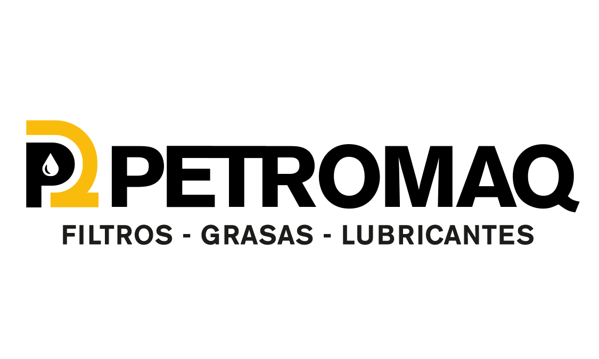

Filtros para transporte pesado y maquinaria
Filtros de aire, aceite y combustible para Volvo FH, F12, F10, F7, NL10, NL12, N10 y N12; Scania, Mercedes-Benz y Renault Trucks. También atendemos Caterpillar, New Holland y John Deere.

Cotizar por WhatsApp ↗Filtros, grasas y lubricantes para transporte pesado, maquinaria, agro, minería e industria.

Encontramos la aplicación correcta para proteger tus equipos y mantenerlos trabajando.
Filtros, grasas y lubricantes seleccionados para el trabajo boliviano.
PETROMAQ es una empresa boliviana especializada en importación y distribución de filtros, grasas y lubricantes de alto rendimiento.
Brindamos atención técnica para elegir el producto correcto, con soluciones para las condiciones más exigentes del trabajo boliviano.
Conocé cómo trabajamos →Entregas, visitas y soluciones que muestran cómo acompañamos a quienes mueven Bolivia.
Desde la ruta hasta el campo, la mina y la planta industrial.
Filtros de aire, aceite y combustible para camiones, buses, flotas y operación de larga distancia.
Soluciones para construcción, movimiento de tierra y trabajo continuo.
Filtración y lubricación para tractores, cosechadoras y maquinaria agrícola.
Protección para motores, sistemas hidráulicos y componentes sometidos a carga.
Productos para mantenimiento preventivo y continuidad industrial.
Atención a talleres diésel, empresas, mayoristas y particulares.
PETROMAQ importa y distribuye productos de alto rendimiento desde Santa Cruz, con atención técnica y envíos a toda Bolivia.
Filtros de aire, aceite y combustible para Volvo FH, F12, F10, F7, NL10, NL12, N10 y N12; Scania, Mercedes-Benz y Renault Trucks. También atendemos Caterpillar, New Holland y John Deere.
Grasas multipropósito y de trabajo pesado para componentes sometidos a carga, vibración, humedad y polvo.
Lubricantes para transporte pesado, maquinaria y flotas, con atención a empresas, talleres y particulares.
Información práctica para encontrar tu producto.
Enviá el código, una fotografía legible, la marca y modelo del equipo o los datos del motor.
Sí, despachamos pedidos a los nueve departamentos de Bolivia, incluido Beni.
Sí. Atendemos flotas, talleres diésel, agroindustria, minería, industria, minoristas y mayoristas.
Mandanos el código, una fotografía o los datos de tu equipo.